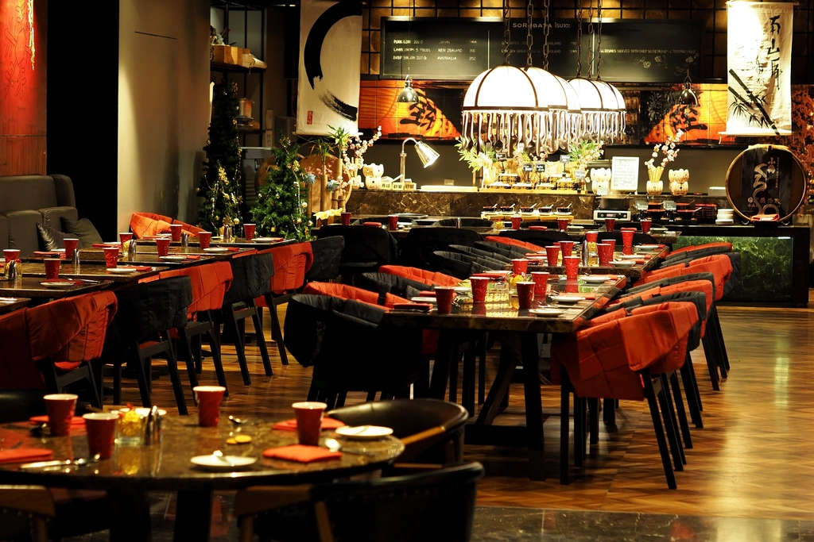
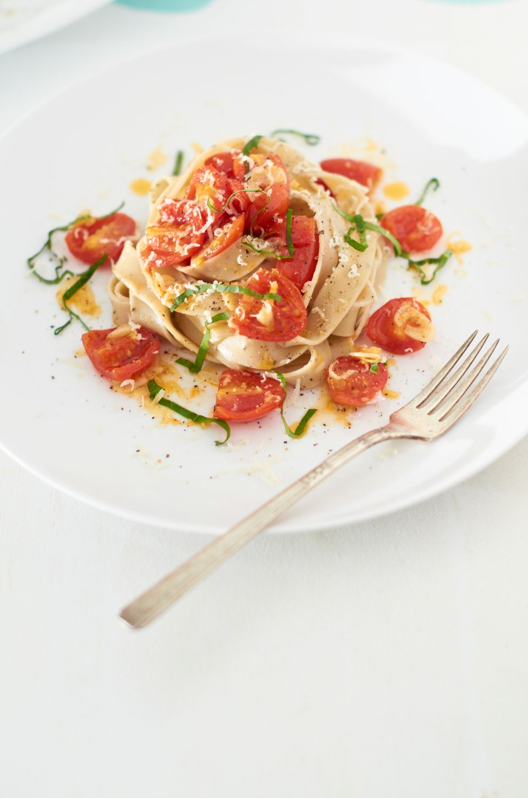
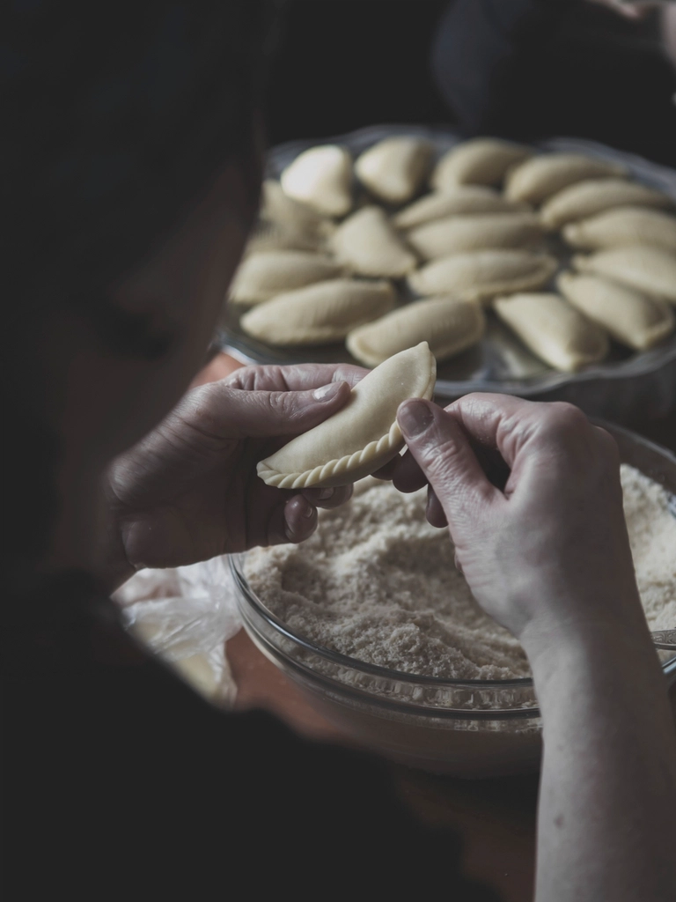
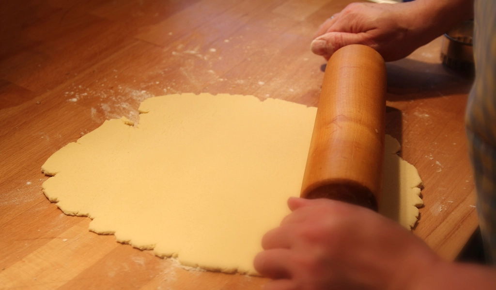
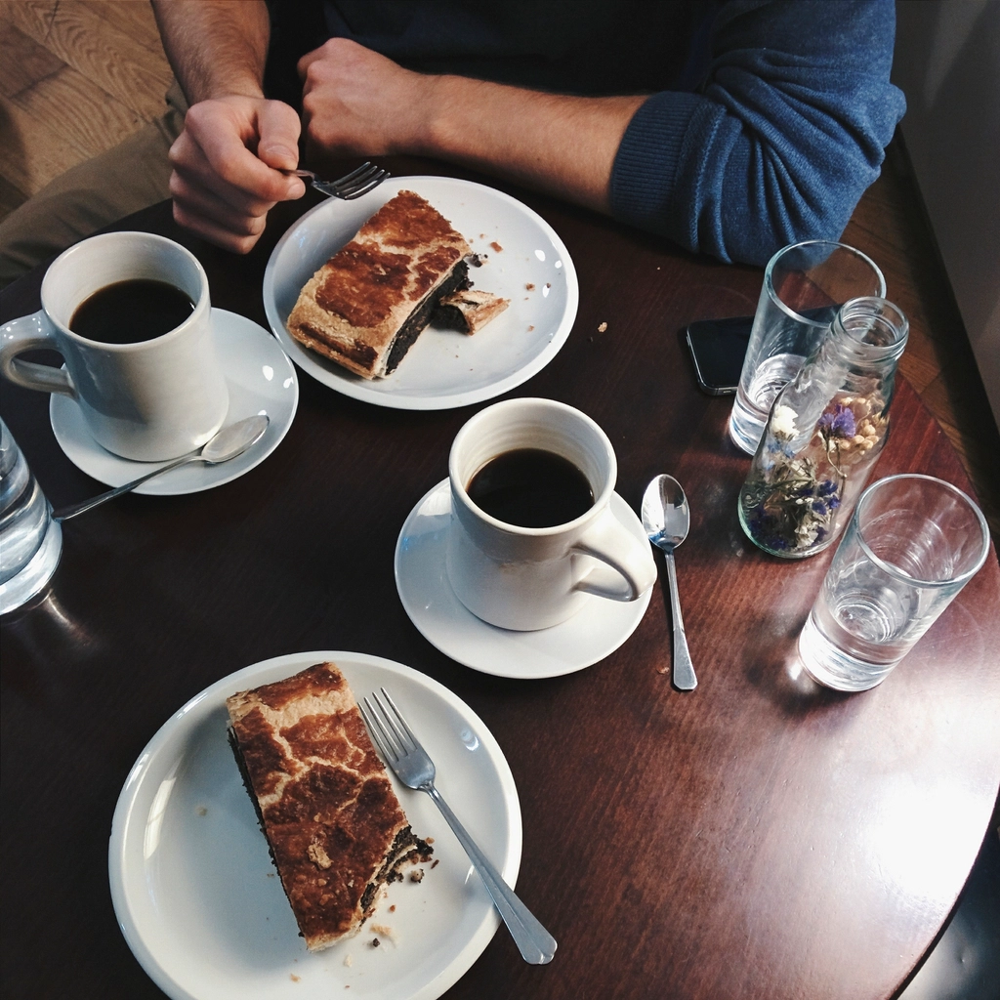
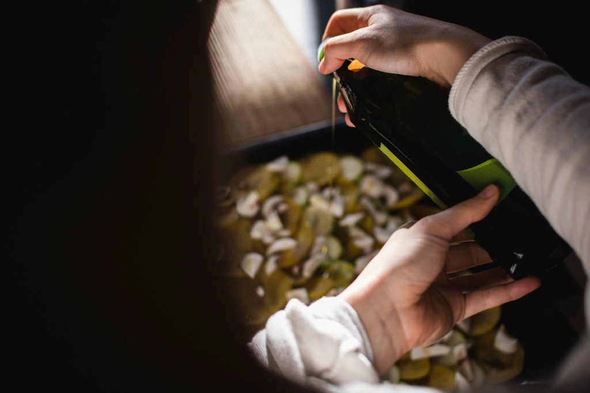

О нас
Семья, мука и огонь
Траттория на сорок мест в старом доходном доме на Кривоколенном. Готовим по тетради бабушки Розы, а за стойкой у печи всегда кто-то из семьи.

История
Тетрадь из Римини
Роза Бьянки родилась в 1941 году в деревне под Римини. Готовить её научила мать: без весов, на глаз, «пока тесто не перестанет липнуть к ладони». В 1978 году Роза открыла закусочную на шесть столов у рыбного рынка.
Меню писали мелом на доске и меняли каждый день, в зависимости от того, что привезли рыбаки и соседи с огородов. Рецепты Роза записывала в школьную тетрадь в клетку. Сейчас таких тетрадей четыре, и последние страницы дописаны уже внуками.
«Хорошая паста, как хороший разговор: чем меньше в ней лишнего, тем лучше».
В 2009 году внук Розы Марко переехал в Москву, работал поваром в двух ресторанах и понял, что скучает по простой еде. Через год он нашёл помещение с высокими потолками на Кривоколенном и перевёз из Италии бабушкину машинку для пасты.
В 2017 году во дворе сложили дровяную печь: мастер приезжал из Неаполя, печь строили три недели. С тех пор пицца здесь печётся 90 секунд при 430 градусах, а по вечерам в ней томятся баклажаны, лазанья и дорадо.

Главные годы
- 1978
Закусочная в Римини
Шесть столов, меню мелом и паста, раскатанная на подоконнике.
- 2010
Траттория в Москве
Марко открывает зал на сорок мест и привозит бабушкину машинку для пасты.
- 2017
Дровяная печь
Печь сложил мастер из Неаполя. Тесто для пиццы с тех пор зреет двое суток.
- 2024
Веранда во дворе
С мая по сентябрь ужинаем под навесом, с пледами и гирляндами.
Команда
Руки, которые готовят
Мы не выносим повара в зал для фото. Но его работу видно: печь и стол для пасты стоят прямо в зале.
-

Основательница
Роза Бьянки
Приезжает в Москву каждую осень, проверяет рагу и учит новых поваров лепить равиоли. Её слово в меню последнее.
«Если тесто липнет, дело не в муке. Дело в спешке».
-

Шеф и внук
Марко Бьянки
Каждое утро в девять раскатывает пасту на весь день. Отвечает за рагу и за то, чтобы печь не остывала.
-

Кондитер
Анна Полякова
Собирает тирамису по утрам и варит соус для панна котты из ягод с рынка.
-

Сомелье и закупки
Джулия Риччи
Возит масло из Лигурии и вино из хозяйств, где делают меньше десяти тысяч бутылок в год.
Контакты
Как нас найти
- АдресМосква, Кривоколенный переулок, 9, стр. 2. Вход с переулка, под вывеской с лимонами.
- На метро«Чистые пруды» и «Тургеневская»: выход к Мясницкой, дальше 6 минут пешком. «Лубянка»: 10 минут.
- На машинеПлатная городская парковка в переулке и на Мясницкой. Вечером в пятницу мест мало, лучше на такси.
- Телефон+7 (495) 555-01-78
- Почта для банкетовstol@nonna-rosa.example
Ежедневно с 12:00
- Понедельникдо 16:00 санитарный день16:00 - 23:00
- Вторник - воскресенье12:00 - 23:00